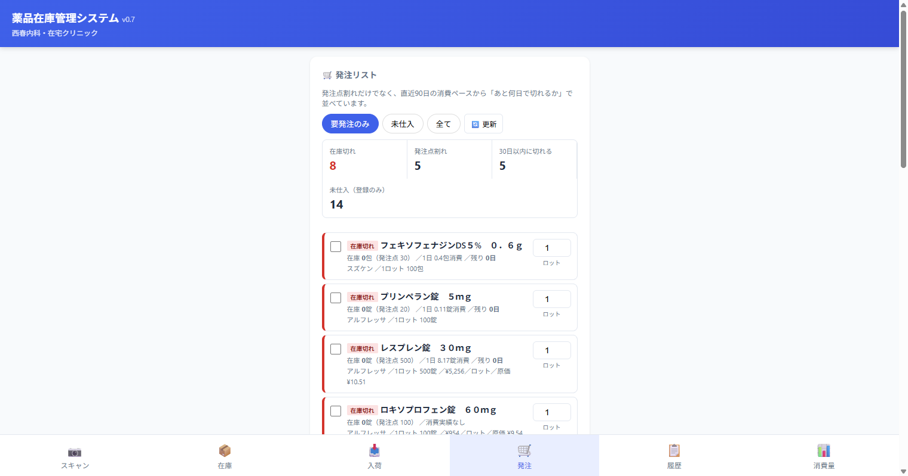
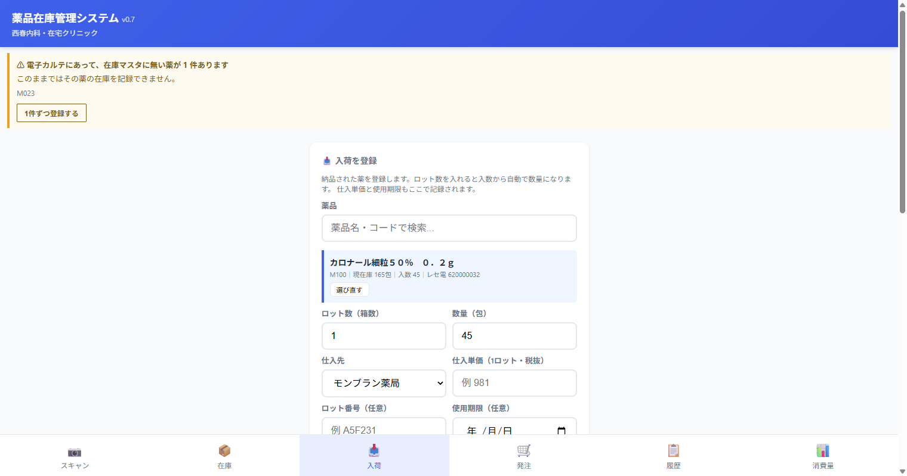
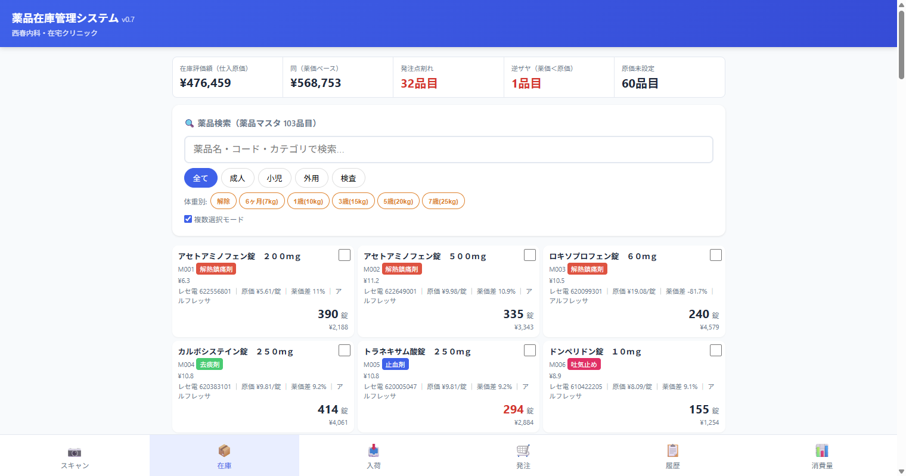

| 区分 | テーブル | 内容 |
|---|---|---|
| マスタ | pharmacy_drug_master | 厚生労働省 医薬品マスタ 18,515件（薬価・単位・剤形の正） |
| pharmacy_medicines | 院内採用薬 103品目（＋原価・レセプト電算コード） | |
| pharmacy_suppliers | 仕入先マスタ | |
| 台帳 | pharmacy_transactions | 入荷・出庫・調整をすべて1本に記録 |
| pharmacy_lots | 入荷ロット（使用期限・仕入単価） | |
| 業務 | pharmacy_orders / _items | 発注書 |
| pharmacy_stocktakes | 棚卸の記録 | |
| 集計 | pharmacy_v_*（7本） | 在庫評価額・月別消費・発注推奨・使用期限アラート |



{name:"M100"} を返しています。
89件すべてが「M100」「M101」…という表示になっている可能性が高く、処方入力で薬を選べません。
| 項目 | 内容 |
|---|---|
| 棚卸の実施 | 全103品目の実数を数えて確定する。差はv0.7の調整記録として残り、以後の在庫金額が正確になる |
| 銘柄違いの4品目 | 後発切替で銘柄が増えた薬（ロキソプロフェン・カルボシステイン・ツロブテロールテープ2規格）の現物がどちらの銘柄か数えて振り分ける |
| ロキソプロフェン錠60mgの入数 | 1,908円のロットが100錠か200錠かを確認する |
| カルテの薬品マスタ | 薬品名の列を元に戻すか、カルテ側が列見出しで読むよう直すかを決める（現状カルテの薬品名が失われている） |